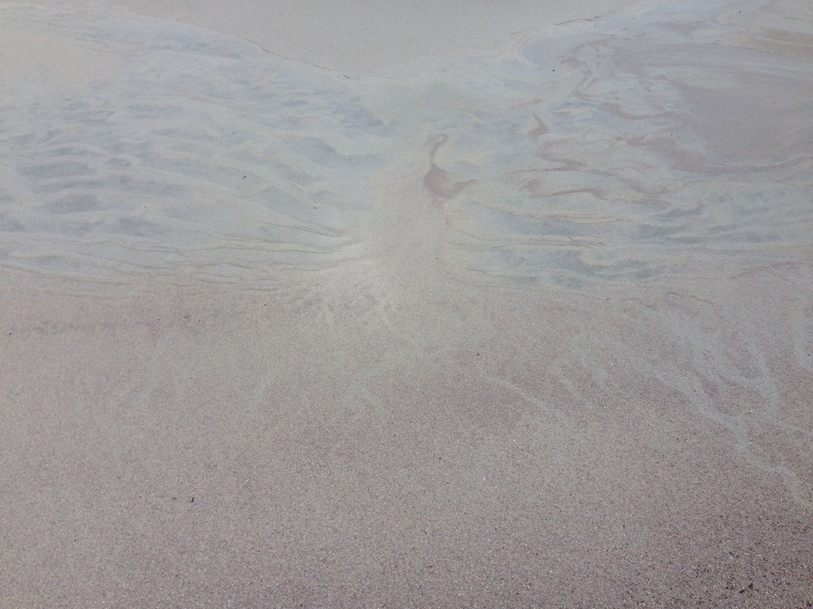

The Art Therapy service aims to support people living in North and South Uist and Benbecula to explore and
help with difficulties they may have. Art therapy provides a confidential safe space where trust can be built
and feelings expressed and explored. Art therapy can help build confidence and self esteem.
What is Art Therapy?
Art therapy uses art media as a way to express and communicate feelings and thoughts.
Within this context, art is used as a medium to address emotional issues, which may be confusing or upsetting.
Art therapists are inspired by various psychological theories. These include attachment based approaches and
current theory informed by neuroscience. Importantly, art therapy practice has evolved to reflect the cultural
and social diversity of the people who engage in it.
How can Art Therapy Help?
Art therapy can help you discover and communicate feelings that cannot be expressed in words. With the help of the Art Therapist whatever it is that might be difficult can be explored through the art making and talking at times if you wish. The Art Therapist will witness and listen very carefully. Through building a supportive and confidential relationship with you, the Art Therapist can help you think about ways to deal with difficulties or make positive changes.
To enquire about the service or for more details email the art therapist at: catriona@taigh-chearsabhagh.org
<<<<<<< HEAD

=======
>>>>>>> parent of 1f8979b... Revert "image resize"